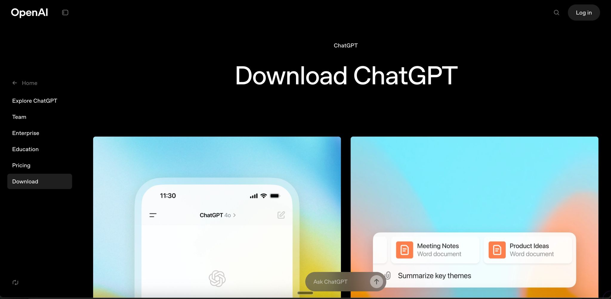
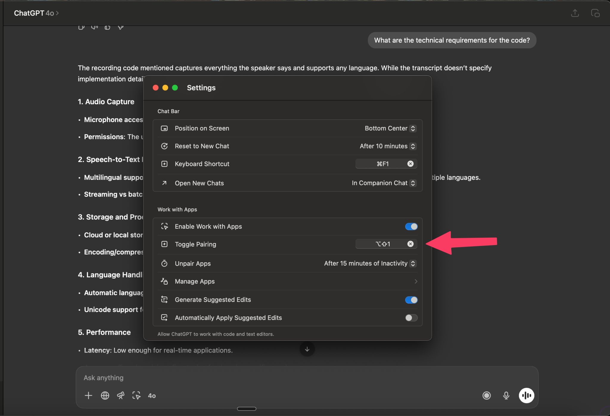
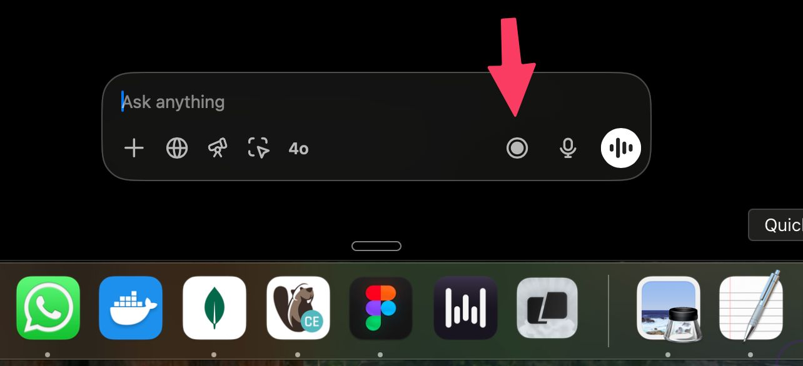

אתם חיביים לנסות את זה! תתקינו את ChatGPT לדסקטופ ב-Mac!
פורסם במקור ב LinkedIn
אתם חיביים לנסות את זה! תתקינו את ChatGPT לדסקטופ ב-Mac!
אפשר להגדיר קיצור מקלדת ואז לפתוח אותו בשניה מכל מקום
ואפשר ללחוץ על כפתור ההקלטה ולהקליט Memos או פגישות שלמות וזה מסכם עבורכם את כל השיחה!
בקיצור, מוצלח ומומלץ


